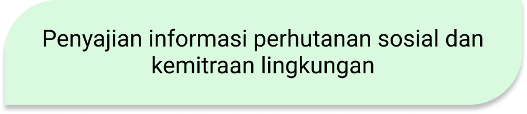
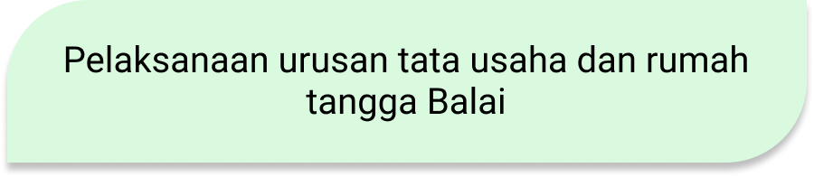
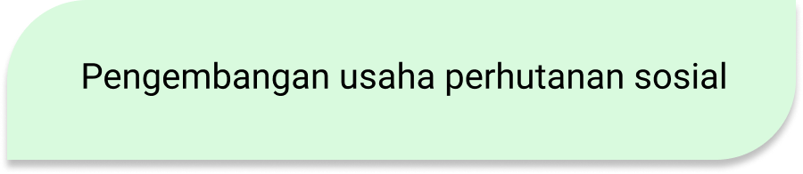
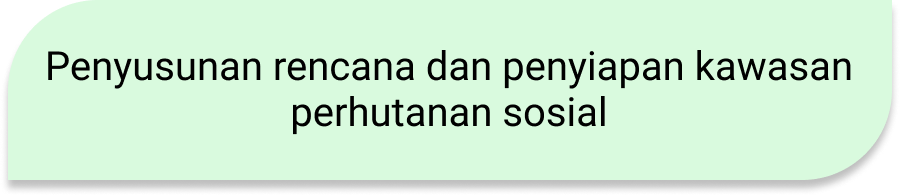
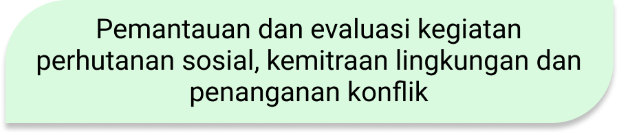

Tugas Balai PSKL Wilayah Jawa





Menurut Peraturan Menteri LHK Nomor P.14/MenLHK/Setjen/OTL.0/1/2016 mengatur tentang organisasi dan tata kerja Balai Perhutanan Sosial dan Kemitraan Lingkungan (BPSKL). Peraturan ini menjelaskan struktur organisasi BPSKL yang meliputi Kepala BPSKL, Subbagian Tata Usaha, Seksi Penyiapan Kawasan dan Usaha Perhutanan Sosial, Seksi Tenurial dan Hutan Adat, serta Seksi Kemitraan Lingkungan. Masing-masing bagian memiliki tugas dan fungsi spesifik, seperti penyiapan kawasan dan usaha perhutanan sosial, penanganan konflik tenurial dan hutan adat, kemitraan lingkungan, serta urusan administrasi.
Terwujudnya Indonesia yang Berdaulat, Mandiri dan Berkepribadian Berlandaskan Gotong Royong.
Mewujudkan keamanan nasional yang mampu menjaga kedaulatan wilayah, menopang kemandirian ekonomi dengan mengamankan sumber daya maritim, dan mencerminkan kepribadian Indonesia sebagai negara kepulauan.
Mewujudkan masyarakat maju, berkeseimbangan dan demokratis berlandaskan negara hukum.
Mewujudkan politik luar negeri bebas-aktif dan memperkuat jati diri sebagai Negara maritim.
Mewujudkan kualitas hidup manusia Indonesia yang tinggi, maju dan sejahtera
Mewujudkan bangsa yang berdaya-saing
Mewujudkan Indonesia menjadi negara maritim yang mandiri, maju, kuat, dan berbasiskan kepentingan nasional
Mewujudkan masyarakat yang berkepribadian dalam kebudayaan